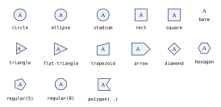
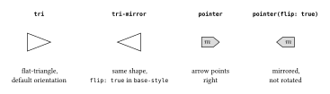

4 Shape Builders
A node’s style.shape holds a function, not a name:
typ.node(0, 0, label: [A], style: (
shape: typ.shapes.ellipse,
fill: aqua.lighten(70%),
stroke: 0.6pt + teal,
inset: 3pt,
))There is no string registry to extend and no parallel validation/lookup path — a custom builder is exactly as cheap to select as a built-in one, because selecting either is just naming a function. This is also why a native Typst element like circle can’t be dropped in directly as a shape: the renderer needs the builder to also report fitted geometry for bounds, wire clipping, and ports, which circle itself doesn’t do. Use typ.shapes.circle — the package’s builder, not the element function.
4.1 Built-in builders
shapes-gallery.typ
// Generates docs/img/shapes-gallery.svg — every built-in shape builder.
// typst compile --root . --ignore-system-fonts docs/img/shapes-gallery.typ docs/img/shapes-gallery.svg
#import "../../src/lib.typ" as typ
#set page(width: auto, height: auto, margin: 8pt)
#set text(size: 7pt)
#let swatch(name, shape) = {
let node = typ.node(0, 0, label: [A], style: (
shape: shape,
fill: rgb("#eef3ff"),
stroke: 0.6pt + navy,
min-size: 15pt,
inset: 3pt,
))
align(center, stack(spacing: 3pt, typ.diagram(scale: 1cm, node), raw(name)))
}
#grid(
columns: 6, column-gutter: 12pt, row-gutter: 12pt,
swatch("circle", typ.shapes.circle),
swatch("ellipse", typ.shapes.ellipse),
swatch("stadium", typ.shapes.stadium),
swatch("rect", typ.shapes.rect),
swatch("square", typ.shapes.square),
swatch("bare", typ.shapes.bare),
swatch("triangle", typ.shapes.triangle),
swatch("flat-triangle", typ.shapes.flat-triangle),
swatch("trapezoid", typ.shapes.trapezoid),
swatch("arrow", typ.shapes.arrow),
swatch("diamond", typ.shapes.diamond),
swatch("hexagon", typ.shapes.hexagon),
swatch("regular(5)", typ.shapes.regular(vertices: 5)),
swatch("regular(8)", typ.shapes.regular(vertices: 8, rotate: 22.5deg)),
swatch("polygon(..)", typ.shapes.polygon(
((-1, -1), (1, -1), (0.35, 0), (1, 1), (-1, 1)),
anchor: (-0.2, 0),
clearance: (1.25, 1.1),
)),
)
empty (no shape, no label — used as an invisible route point, so it isn’t pictured above) and bare (label only) are the two non-drawing builders. The rest fit an outline around the label plus inset. circle is rotation-invariant; the axis-aligned bare, ellipse, stadium, rect, and square reject a nonzero style.rotate instead of silently ignoring it — reach for a polygon-based builder when rotated geometry is required.
Shape-builder rotation follows Typst’s screen convention, where +90deg is visually clockwise. This is not the same convention as diagram-coordinate angles (edge directions, group()), where +90deg sends +x toward mathematical +y, i.e. visually up — a node whose graphic should track a group(rotate: angle) needs style: (rotate: -angle) on that node; see Fragments and Equations.
4.2 Regular polygons
typ.shapes.regular(vertices: 3, rotate: 0deg, clearance: auto)Returns a builder for any regular polygon of three or more sides. rotate here is baked into the builder once, at factory time — a node’s own style.rotate composes on top of it afterward. With clearance: auto, the builder derives label breathing room from the circumradius/apothem ratio, so a triangle reserves more room around its label than a high-sided polygon does; pass a positive number to override that heuristic.
#let octagon = typ.shapes.regular(vertices: 8, rotate: 22.5deg)
#let stop = typ.node-type("stop", base-style: (
shape: octagon,
fill: red, stroke: 0.8pt + maroon,
min-size: 18pt, inset: 3pt,
))A regular heptagon, or any other n-gon, needs no new package code — the factory computes its unit points and trigonometry once, rather than repeating that work per node.
4.3 Arbitrary fitted polygons
typ.shapes.polygon(vertices, anchor: auto, rotate: 0deg, clearance: 1, label-offset: (0, 0))Returns a builder from three or more unitless numeric point pairs. The template is scaled uniformly until its bounding box meets the fitted width and height, preserving aspect ratio.
anchor: autouses the template’s bounding-box centre as the node origin. Pass an explicit point when that centre would land outside a concave silhouette — the node origin must be strictly inside the polygon, because wire clipping casts a ray from it and needs a well-defined first exit.rotate:rotates the template before fitting; a node’s ownstyle.rotaterotates the already-fitted result, applied afterstyle.flipmirrors it.clearance:is a positive number, or an(x, y)pair, multiplying label breathing room.label-offset:is a numeric template-space vector that scales and rotates with the polygon.
#let chevron-shape = typ.shapes.polygon(
((-1, -1), (0.2, -1), (1, 0), (0.2, 1), (-1, 1), (-0.35, 0)),
anchor: (-0.1, 0),
clearance: (1.25, 1.1),
)Concave polygons are supported; self-intersecting ones are not, and fitting does not prove that a padded label rectangle stays inside every concave silhouette — inspect the result visually and adjust clearance:.
4.4 Directional shapes and flip
triangle, flat-triangle, trapezoid, and arrow are directional: each honors style.flip, mirrored across the shape’s local y-axis before style.rotate is applied. This is the same mirror-then-rotate order used everywhere a builder in the package composes the two, so a new directional builder can’t accidentally apply them in the other order.
flip earns a place as its own concept — not just another style key — because mirroring and rotating answer different questions. Rotating an arrow by 180° and mirroring it can even look identical for a shape with no other asymmetry, but they mean different things once a label, a slant, or a tip ratio is involved: mult(..., flip: true) says “this is the same arrow, pointing the other way,” while a rotation says “this is the same arrow, at a different angle.” state/effect make the distinction concrete — they are the same flat-triangle shape, related by a mirror, not by a rotation:
flip-vs-rotate.typ
// Generates docs/img/flip-vs-rotate.svg — directional shapes and flip:.
// typst compile --root . --ignore-system-fonts docs/img/flip-vs-rotate.typ docs/img/flip-vs-rotate.svg
#import "../../src/lib.typ" as typ
#let diagram = typ.diagram
#set page(width: auto, height: auto, margin: 8pt)
#set text(size: 8pt)
// A mirrored pair declared directly with flip: true in base-style (the
// "effect is state mirrored" pattern), and a flippable: true constructor a
// document can flip per call.
#let tri = typ.node-type("tri", base-style: (shape: typ.shapes.flat-triangle, fill: white, stroke: 0.6pt + black, min-width: 26pt, min-height: 20pt))
#let tri-mirror = typ.node-type("tri-mirror", base-style: (shape: typ.shapes.flat-triangle, flip: true, fill: white, stroke: 0.6pt + black, min-width: 26pt, min-height: 20pt))
#let pointer = typ.node-type("pointer", flippable: true, base-style: (shape: typ.shapes.arrow, fill: luma(220), stroke: 0.6pt + black, min-size: 11pt, inset: 3pt))
#table(
columns: 4, align: center + horizon, stroke: none, column-gutter: 16pt, row-gutter: 4pt,
[*`tri`*], [*`tri-mirror`*], [*`pointer`*], [*`pointer(flip: true)`*],
diagram(scale: 1cm, { tri(0, 0) }),
diagram(scale: 1cm, { tri-mirror(0, 0) }),
diagram(scale: 1cm, { pointer(0, 0, label: $m$) }),
diagram(scale: 1cm, { pointer(0, 0, label: $m$, flip: true) }),
[flat-triangle,\ default orientation], [same shape,\ `flip: true` in `base-style`], [arrow points\ right], [mirrored,\ not rotated],
)
effect gets there by setting flip: true in its node-type base-style (see Theming); mult and map instead declare flippable: true so documents can flip them per call with a top-level flip: argument, on top of whatever the theme already set. Reach for flippable: true on any reusable kind whose shape is directional — see node-type().
4.5 Custom shape builders
A builder’s conceptual signature is:
(measured-label, resolved-inset, resolved-style) => outlinemeasured-labelhas absolutewidth/height.resolved-insethas absoluteleft/right/top/bottom.resolved-styleholds every merged style value. Core geometric fields (min-width,inset,radius,stroke, …) are already scaled to absolute units; unknown custom fields pass through unchanged, since the renderer can’t infer their units or meaning. Prefer dimensionless custom ratios, or derive lengths fromfit-box/the resolved core dimensions, so custom geometry still follows diagram andgroup()zoom.
Two helpers cover most custom geometry:
typ.fit-box(label, pad, style, clear-x: 1, clear-y: 1, square: false)returns a fitted(width, height)pair.typ.polygon-outline(points, label-offset: (0pt, 0pt))validates absolute-length point pairs and returns a complete polygon outline.
#let kite-shape = (label, pad, style) => {
let (width, height) = typ.fit-box(label, pad, style, clear-x: 1.4, clear-y: 1.3)
let (hw, hh) = (width / 2, height / 2)
typ.polygon-outline(
((0pt, -hh), (hw, 0pt), (0pt, hh), (-hw * 0.65, 0pt)),
label-offset: (-hw * 0.08, 0pt),
)
}
#let kite = typ.node-type("kite", base-style: (
shape: kite-shape, fill: white, stroke: 0.6pt + black, inset: 3pt,
))A builder must return one of these outline kinds:
(kind: "empty")
(kind: "bare")
(kind: "circle", radius: <non-negative length>)
(kind: "ellipse", half-width: <length>, half-height: <length>)
(kind: "rect", half-width: <length>, half-height: <length>, radius: <length>)
(kind: "polygon", points: <absolute point array>, label-offset: <absolute pair>)Circle, ellipse, and rectangle outlines may include an optional absolute label-offset; polygons require it. empty/bare reject one entirely. The renderer adds the standard per-side inset displacement afterward and unions the shifted label with the silhouette for diagram bounds, so an intentional offset is never cropped.
Any geometry reducible to those five kinds — closed circle, ellipse, rectangle, or polygon silhouettes, plus the two non-drawing kinds — is expressible with a custom builder. A genuinely new primitive, such as an open path or a shape with a hole, needs a new core outline kind plus matching drawing, bounds, and clipping logic; see Extending typograph.
typ.shapes.build-outline(builder, measured-label, resolved-inset, style) is the low-level validator the renderer itself calls at this boundary. Most theme authors never call it directly, but it’s the fastest way to test a custom builder in isolation, without rendering a whole diagram:
#context {
let outline = typ.shapes.build-outline(
kite-shape, measure[A],
(left: 3pt, right: 3pt, top: 3pt, bottom: 3pt),
typ.node-defaults,
)
}(measure needs a known layout context, hence the context wrapper — the renderer itself always calls build-outline from inside one.)
Full outline-kind field contracts and every built-in builder’s exact behavior are in the Shape Reference.